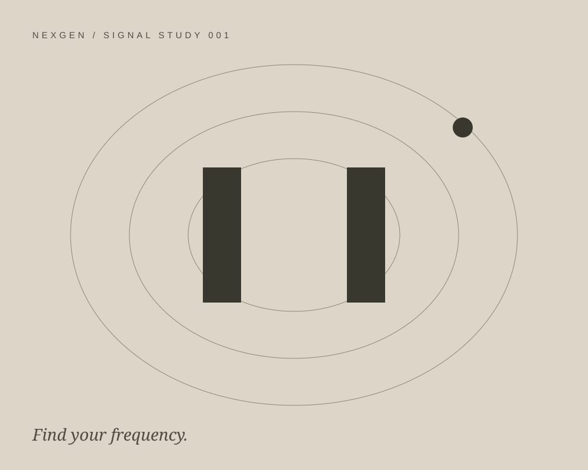
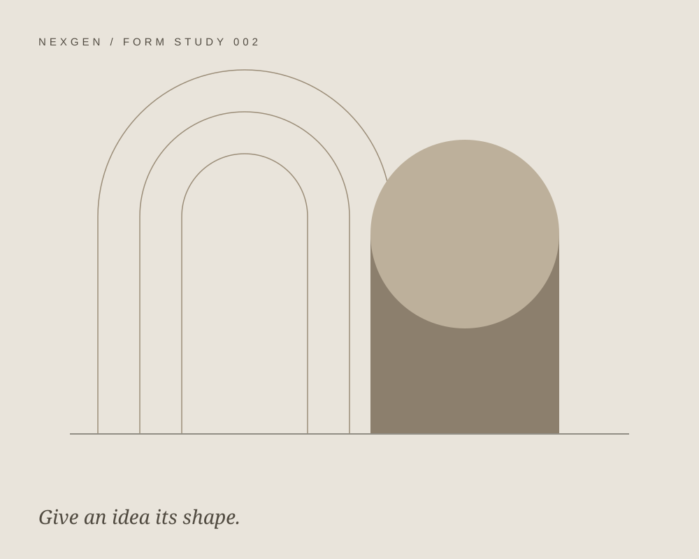
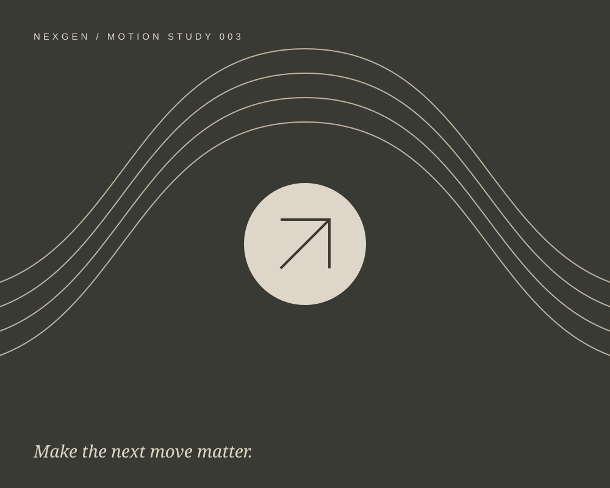

Our services
From first thought
to forward motion.
From the bigger picture to the smallest detail.
Support shaped around your brand.

01 / The direction
Social strategy.
Great content starts with a clear point of view. We help you understand your audience, define your voice, and build a plan that gives your presence purpose.
- Brand & social audits
- Audience insights & content pillars
- Channel strategy & creative direction

02 / The expression
Content creation.
A focused shoot. A fresh idea. A story that stays with you. We shape social-first content around your brand, from concept and production to the final edit.
- Batch content & short-form video
- Creator-led storytelling
- Campaign concepts & creative production

03 / The everyday
Social management.
Consistency, with character. We bring planning, publishing, and creative thinking together to keep your brand present and your community engaged.
- Content calendars & publishing
- Community engagement
- Reporting & ongoing refinement